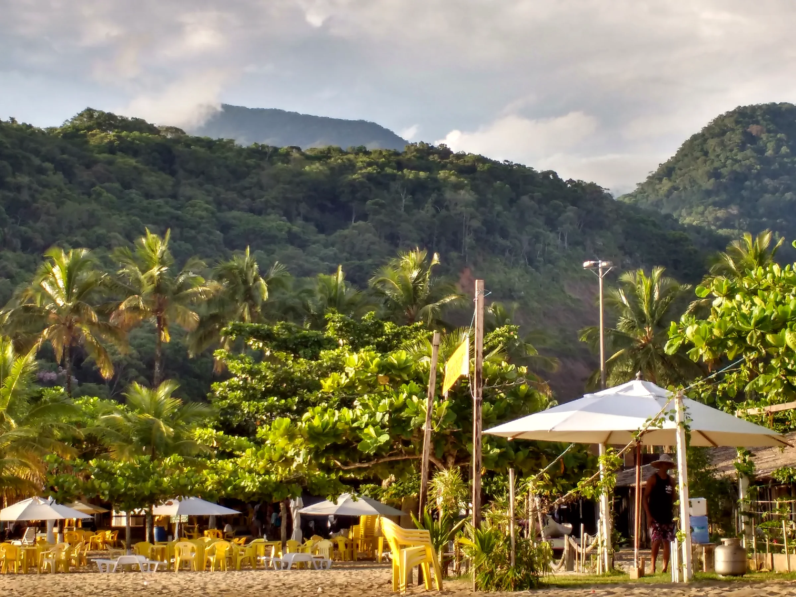
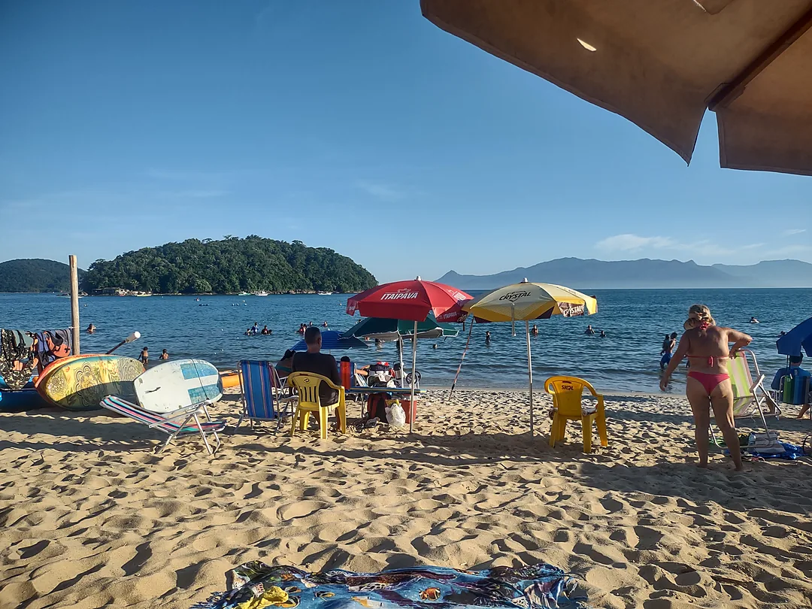
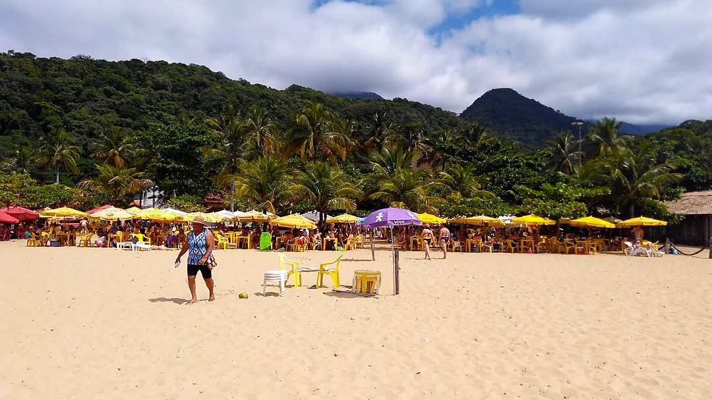

Mais pedido
Peixe Porquinho & Frito
Tradicional na areia, sequinho e crocante com limão.

Há 35 anos servindo peixe frito na hora, camarão à dorê, casquinha de siri e cerveja trincando entre Massaguaçu e a Praia da Cocanha.
Estrutura completa entre Massaguaçu e a Praia da Cocanha para você só se preocupar em aproveitar o mar com a família.
Acesso fácil na Av. João Gonçalves Santana, 318, na divisa entre Massaguaçu e a Praia da Cocanha, com entrada acessível.
Guarda-sóis amarelos, espreguiçadeiras e sombra fresca na varanda coberta com vista direta para a Ilha da Cocanha e águas calmas para crianças.
Peixe porquinho crocante, camarão à dorê, lula, casquinha de siri, mandioca com bacon e cerveja trincando servidos direto na sua mesa.
Ducha de água doce para tirar o sal, Wi-Fi gratuito, banheiro com acessibilidade e pagamento em cartão ou Pix.

Porções caprichadas preparadas na hora para compartilhar de frente para o mar de Caraguatatuba.
Tradicional na areia, sequinho e crocante com limão.
Porção generosa de camarões empanados para a família.
Anéis dourados e macios servidos quentinhos na mesa.
Clássico caiçara bem temperado para abrir o apetite.
Acompanhamento crocante perfeito na faixa de areia.
Cerveja trincando, sucos naturais, caipirinhas e açaí na tigela.
Toque em qualquer foto para ampliar em alta definição.



Fotos reais registradas por clientes e equipe no Google Maps do Quiosque da Neide.
Escolha sua preferência abaixo e envie a mensagem pronta direto para o nosso atendimento no (12) 98821-1228.
“Excelente ponto entre Massaguaçu e a Cocanha! Porções bem servidas, cerveja super gelada e ótimo atendimento pé na areia.”
“Lugar perfeito para ir com a família e crianças. De frente para a Ilha da Cocanha, tem ducha, banheiro limpo e peixe frito fresquinho.”
“35 anos de tradição que fazem diferença. Camarão à dorê e mandioca com bacon maravilhosos, sombra boa na areia o dia inteiro.”
Ficamos na Av. João Gonçalves Santana, 318 — Ponto 03, na divisa entre a Praia de Massaguaçu e a Praia da Cocanha, em Caraguatatuba-SP, bem de frente para a Ilha da Cocanha.
Abrimos todos os dias da semana, de segunda a domingo, das 08h às 18h.
Sim! Contamos com mesas e cadeiras na areia, guarda-sóis, espreguiçadeiras, varanda coberta, ducha de água doce, Wi-Fi gratuito e entrada/banheiro com acessibilidade.
Aceitamos cartões de débito, cartões de crédito, Pix e dinheiro.